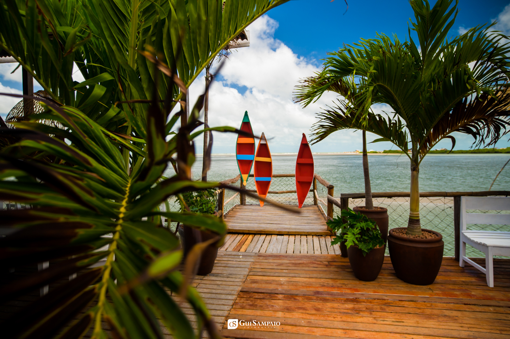

Seja para um feriado prolongado ou um fim de semana de fuga da rotina, Salinópolis (carinhosamente chamada de Salinas) é um dos destinos mais procurados do Pará. Com suas praias de areia fina, mar que oscila conforme a maré e uma gastronomia de dar água na boca, Salinas surpreende.
Para você que vai passar 3 dias na cidade e não quer perder o melhor que a Amazônia Atlântica tem a oferecer, preparamos este roteiro especial.
Dia 1: Chegada, Relaxamento e Praia do Atalaia
Manhã: Chegue em Salinópolis, faça o seu check-in e vista sua roupa de banho. Se você busca a localização ideal, fica a dica: o Hotel Solar fica na cidade, de frente para o mar, com uma localização estratégica – perto de todas as praias e do burburinho onde acontecem as atividades da noite.
Tarde: Vá direto para a famosa Praia do Atalaia. O diferencial aqui é que os carros podem entrar na areia! Para o almoço e petiscos, indicamos conhecer a barraca O Casemirão. É parada obrigatória pedir um caranguejo "toc-toc" bem tradicional ou uma saborosa pratiqueira frita, acompanhados de uma bebida bem gelada.
💡 Dica extra: Como os carros acessam a extensão de areia da praia, aproveite com responsabilidade: se beber, não dirija! Fique atento, pois a fiscalização da Lei Seca pelo Detran é intensificada aos finais de semana, férias e feriados em Salinópolis.
Noite: Após curtir a praia e tomar um banho relaxante, faça um passeio pela nova orla da antiga pracinha. Ela está moderna, muito bonita e super ventilada. O local tem bastante movimento e uma vibe excelente para bater papo e curtir a noite salinopolitana.

Dia 2: Aventura Náutica e Revoada dos Guarás
Manhã: Que tal fugir do óbvio? Agende um Passeio de Barco pelo Rio Arapepó (lembre-se de conferir os horários antes, pois as saídas dependem das condições da maré). É lindo demais ver a natureza de pertinho.
Tarde: Durante esse passeio de barco, aproveite para conhecer a fantástica Praia Ponta do Espadarte, com areia firme, excelente para banho de mar e caminhada. Na volta do passeio, a melhor pedida é almoçar no restaurante Reserva Solar. Descanse por lá com aquela vista deslumbrante para o mar e assista ao pôr do sol majestoso, que é o cenário perfeito para admirar a revoada dos guarás encarnados.
Noite: É hora de passear nas novas passarelas de madeira que ficam na Orla do Maçarico. Você pode comprar artesanatos locais de lembrança, tomar um delicioso sorvete e escolher um dos variados restaurantes da orla para jantar.
Dia 3: Praia do Maçarico e Despedida
Aproveite o último dia para uma manhã tranquila. Dê um pulinho na Praia do Maçarico, que fica ali pertinho, excelente para uma última caminhada com o pé na areia para renovar as energias.
Por fim, aproveite as últimas horas na piscina do hotel antes de fechar a mala, levando na bagagem memórias inesquecíveis da Amazônia Atlântica.
Gostou das dicas?
Venha viver Salinópolis da melhor forma. Hospede-se no Hotel Solar, com localização privilegiada, café da manhã maravilhoso e conforto para toda a família.
Garantir Minha Reserva